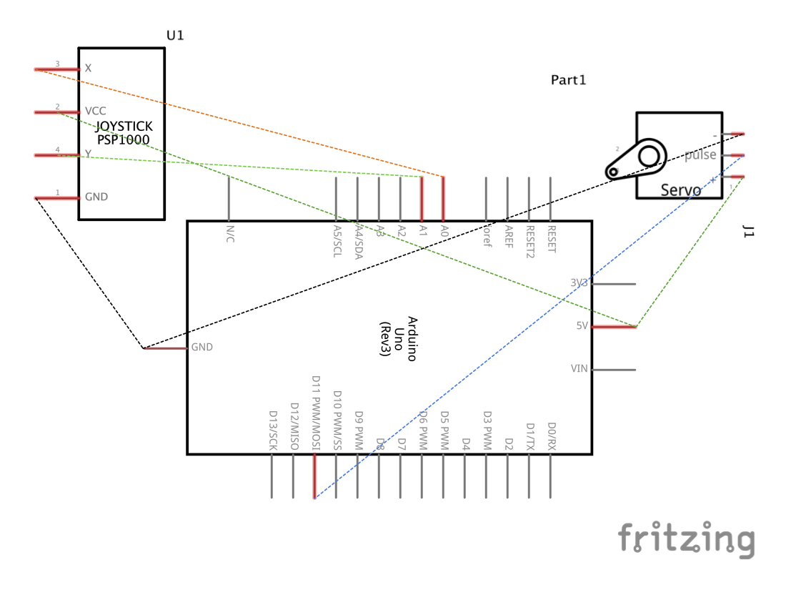
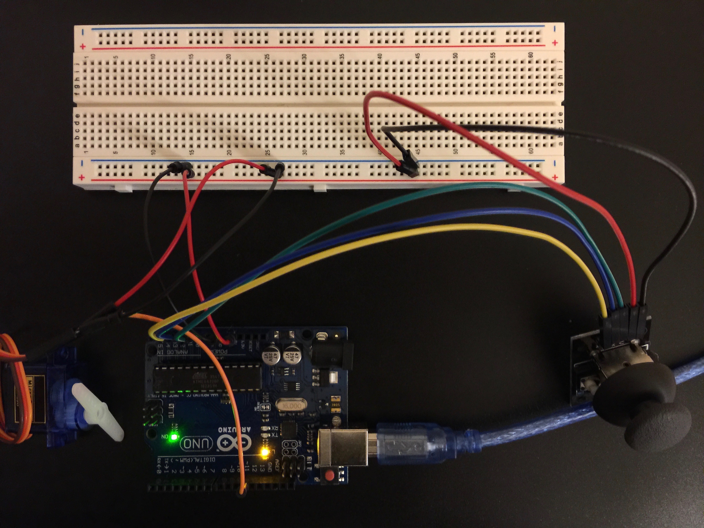

Steven Yong's Assignment 5!
Schematic
So this week was a needed change of pace. I didn't need to stress or worry about the "danger zone" because servo motors are all packaged up into one neat little box and play nicely with Arduinos.
Circuit
The circuit was pretty easy this week because it was like playing in a bubble-wrapped playground. I didn't need to worry about alligator clips grazing my Arduino and frying it or having to remember to turn off the power supply before touching anything. I accidentally plugged the joystick pins into digitalRead, but it was quick to diagnose because the values in my serial monitor did not change. I plugged the switch pin of the joystick in anyways, but I coudln't find a good use for them this week. (According to Nadya, the switch pin doesn't behave as we would expect, so that was a rabbit hole I wanted to avoid anyways.)
Firmware
#include//Initiate the servo.h library. Servo myServo; //Create a servo object and name it myServo. int x = A0; //Create an integer variable called x, and give it the value A0. int y = A1; //Create an integer variable called y, and give it the value A1. int xval = 0; //Create an integer variable called xval, and give it the value 0. int yval = 0; //Create an integer variable called yval, and give it the value 0. int convertedx = 0; //Create an integer variable called convertedx, and give it the value 0. void setup() { Serial.begin(9600); //Initiate the serial moniter at 9600 baud. myServo.attach(11); //Assign pin 11 as the servo output pin. } void loop() { xval = analogRead(x); //Read the values coming in from the joystick at pin A0 (x-axis). yval = analogRead(y); //Read the values coming in from the joystick at pin A1 (y-axis). convertedx = map(xval, 0, 1000, 0, 90); //Use the map function to convert the x-values of the joystick to the 90 degree angle of the servo motor. Serial.print("x = "); //Print this in the serial monitor. Serial.println(xval); //Print the x-value in the serial monitor, then create a new line. Serial.print("y = "); //Print this in the serial monitor. Serial.println(yval); //Print the y-value in the serial monitor, then create a new line. Serial.print("converted x = "); //Print this in the serial monitor. Serial.println(convertedx); //Print the converted x-value in the serial monitor. Serial.println(); //Create a new line. myServo.write(convertedx); //Give the servo motor the new converted x-value. delay(15); //Delay by 15 milliseconds. }
So after working with the serial monitor for a bit, I wish there was a way to slow it down. It's hard to read the values when it's scrolling so quickly. Just trying to visually process and understand that the joystick outputs values from 0 to 1000 for each axis took a minute or two because it's like "ah, what am I looking at?" It's important to note that the map function only maps to 0 through 90 because I tested my servo motor and it only works in that range, despite the datasheet saying it goes from -90 to 90. When I told my servo motor to go to -90, it would stop at the 0 position. I'm not sure if it's a quality control issue or something else? I also tried thinking of a way to incorporate the y-values, but servo motors are so simple that I couldn't think of anything.
Circuit's Operation

Yay, it works and I didn't break anything this week. What a joy!